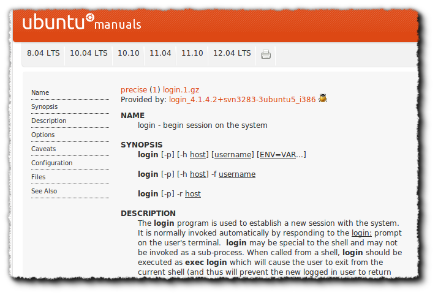

Einleitung
Linux basiert stärker als andere Betriebssysteme auf der Idee, Kommandos über die Tastatur einzugeben.
Für viele Nutzer ist dies erst einmal abschreckend. Die Kommandozeile ist allerdings ein praktisches und mächtiges Werkzeug für viele Operationen, die sich über eine grafische Oberfläche schlecht ausführen lassen.
Diese Einheit soll Sie an erste Kommandos heranführen, wie z.B. das Einloggen am System. Sie sollen lernen, wie Sie sich in der der Kommandozeile zurechtfinden und wie Sie Kommandos und entsprechende Hilfen zu diesen finden.